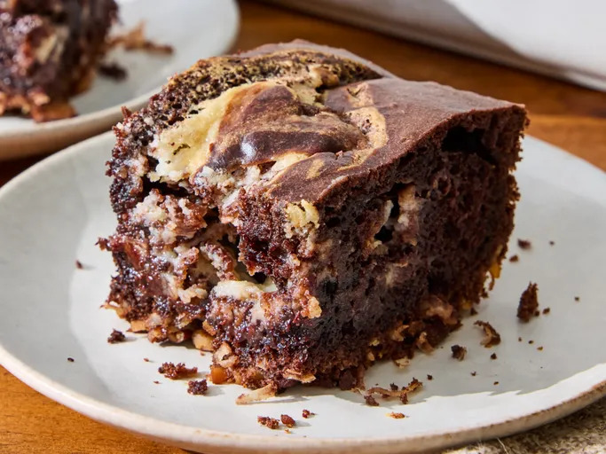

German Chocolate Dump Cake

Description
This German chocolate dump cake tastes like the real thing, but batter, filling, and topping elements are all baked
together.
It has the pecan and coconut flavors you expect, and the cream cheese swirl carries the frosting flavor.
It’s nicely moist, and you get crunchy bits—really enjoyable.
Ingredients
- 1 2/3 cups toasted pecans, chopped, divided
- 1 cup sweetened flaked coconut
- 1 (2-layer size) package devil's food cake mix
- eggs, oil, and water as specified for the cake mix
- 1 (8 ounce) package cream cheese, softened
- 1/2 cup butter, melted
- 2 teaspoons vanilla extract
- 1/4 teaspoon salt
- 1 cup powdered sugar
- 2/3 cup semisweet chocolate chips
Home